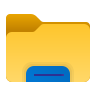

REA (Recurso Educacional Aberto) construído na disciplina CSH42 - Acessibilidade e Inclusão Digital, da
UTFPR, com
o tema Letramento Digital.
Com a crescente digitalização de processos, torna-se necessário, nos dias de hoje, um nível considerável de
domínio das tecnologias digitais. Esse domínio das tecnologias digitais, aliado a compreensão das
implicações sociais e éticas do uso das tecnologias, denomina-se Letramento Digital.
Ele é de suma importância, pois é necessário que as pessoas, além de saberem operar as tecnologias, também
conheçam suas nuances de uso, de forma que compreendam processos sociais que ocorrem no mundo digital, novas
modalidades de golpes, novas formas de interação entre pessoas, dentre outros aspectos. Portanto, é
importante que as pessoas saibam operar as tecnologias digitais, mas também tenham uma visão crítica dela,
para que possam aproveitar seus pontos positivos e mitigar seus pontos negativos.
Nesta REA, estarão conteúdos referentes aos aspectos básicos e intermediários de operação de computadores,
editores de texto, dentre outros.
Este material é construído com base nas necessidades de seu público alvo, tratado com suas especificidades
na disciplina CSH42. Neste arquivo, estarão presentes os conteúdos tratados com o público alvo, além de
materiais extras.
Para organizar uma oficina de letramento digital, é necessário conhecer seu público alvo e suas
necessidades. Portanto, um dos primeiros passos é a realização de uma reunião de alinhamento,
considerando
as expectativas e objetivos do público alvo.
A partir da primeira reunião, é possível definir os conteúdos a serem abordados nas oficinas. É
importante que metas realistas sejam estabelecidas, considerando as dificuldades anteriores do público
alvo e o tempo disponível.
Execução das oficinas
Para a execução das oficinas, é importante estabelecer metas de conteúdos a serem tratados em cada dia
de oficina, contudo, é importante considerar o tempo disponível de oficina e deixar uma sobra de tempo.
Essa sobra de tempo é importante pois dúvidas não relacionadas ao conteúdo da oficina podem surgir, e é
importante sanar essas dúvidas, pois elas também fazem parte do processo de letramento digital.
Entretanto, a oficina inteira não pode se tratar das dúvidas, senão, o caminho do letramento digital
torna-se muito tortuoso.
Também é importante deixar "tarefas de casa" para o público alvo e incentivar ele a trazer dúvidas nas
próximas oficinas, pois desta forma garante-se que o conteúdo está sendo fixado e que novos assuntos
serão explorados.
Noções Básicas
Padrões de Design
Os aplicativos e sites costumam ter um padrão bem semelhante, com barras de tarefa localizadas
geralmente na parte superior ou lateral da tela. Localizar essa barra pode ser importante para acessar
funções importantes do site/app em que você está. Ao localizar a barra, é importante também ver os
ícones presentes para mais facilmente descobrir as diferentes funcionalidades que o site/app te
apresenta.
Aprender a navegar pelos meios digitais é essencial para o bom uso de suas ferramentas. Portanto,
entender formas padrões de layout (ou organização) acelera a compreensão do meio digital e
auxilia no
entendimento de aplicativos mais complexos no futuro.
O entendimento do uso do mouse ou touchpad (superfície do Notebook sensível a toques)
é
essencial para navegar no computador. As 4
funções principais são:
Clique com botão esquerdo, Clique com botão direito, rolagem e mexer o cursor na tela.
O clique com o botão esquerdo é considerado o clique principal e é usado para selecionar conteúdo ou
arrastar arquivos/imagens. O clique com o botão direito ou clique secundário é usado para funções extras
como copiar, colar e outras funções de atalho. A rolagem é utilizada para navegar de forma vertical na
tela podendo ser a rolagem na mesma direção do conteúdo ou na direção oposta. O movimento do cursor do
mouse na tela pode ser pouco intuitivo com o mouse sendo levado para "cima" na verdade sendo o mouse
indo para mais longe em uma direção perpendicular. O movimento da esquerda para a direita e vice-versa é
mais natural pois o movimento da mão é facilmente associado ao movimento do cursor.
Curso de Digitação
Uma habilidade valiosa para uma pessoa presente no meio acadêmico é a digitação numa velocidade razoável.
Essa habilidade é construída com algumas técnicas e, principalmente, prática. Para tal, um curso de
digitação pode ser um meio para promover o aumento da velocidade de digitação.
Um curso de digitação gratuito presente na Internet é o Agile
Fingers. Nele, é possível além de treinar a digitação, verificar a posição correta dos dedos no
teclado, entre outros artifícios.
A primeira oficina de digitação foi realizada em duas etapas, a primeira parte foi demonstrar o
posicionamento ideal das mãos sobre o teclado e exemplos de como chegar às diversas teclas com de forma
eficiente. A mão esquerda é posicionada com o dedo indicador em cima da tecla “F”, dedo do meio na tecla
“D”, dedo anelar na tecla “S” e dedo mínimo em cima da tecla “A”, o mesmo processo foi feito com a mão
direita, com o dedo indicador em cima da tecla “H”, dedo do meio na tecla “J”, dedo anelar na tecla “K” e
dedo mínimo em cima da tecla “L”.
A partir desse posicionamento, pode-se alcançar com facilidade as teclas principais do teclado, por exemplo,
retira-se o dedo indicador da mão esquerda da tecla “F” e pode-se alcançar as teclas “G”, “R”, “V” e “B”, as
teclas mais próximas a posição inicial do dedo. A mesma ideia pode ser aplicada para todos os dedos e todas
as teclas principais do teclado terão fácil acesso.
Operação no Sistema Operacional
A operação de um Sistema Operacional, que permite a Interação Humano-Computador, é de suma importância.
Alternar Janelas
Fig. 6 - Barra de tarefas do Windows, uma das principais formas de alternar entre tarefas.
Fonte: Captura própria do Windows 11.
Nesse sentido, uma função útil do sistema operacional Windows é a possibilidade de alternar entre janelas
da
mesma aplicação ou de aplicações diferentes.
No Filememo,
há
a descrição de como alternar janelas no Windows de diversas formas.
Dividir a tela
Fig. 7 - Exemplo de tela dividida no windows. Fonte:
Captura própria do Windows 11.
Outra função importante de um sistema operacional é de dividir a tela entre várias janelas. Isso é
particularmente útil quando, por exemplo, se está fazendo anotações em uma parte da tela, e está se
lendo um texto em outra parte tela.
Este tutorial do TechTudo
explana várias formas de dividir a tela no Windows.
Explorador de Arquivos

Fig. 8 - Ícone do explorador de arquivos do Windows. Fonte: Icons8.
O explorador de arquivos é uma ferramenta essencial para a navegação e organização de arquivos no
computador. Ele permite que o usuário acesse, crie, mova, copie e exclua arquivos e pastas.
Basicamente, as pastas são como pastas físicas, onde são guardados as folhas, documentos, ou arquivos. As pastas podem
conter outras pastas, formando uma estrutura hierárquica. Essa estrutura pode ser observada na Figura 9.
Fig. 9 - Exemplo de estrutura de pastas e arquivos. Fonte: Autoria própria.
O explorador de arquivos é acessado através do ícone de pasta na barra de tarefas ou pressionando a tecla
Windows + E.
Fig. 10 - Exemplo de estrutura de pastas e arquivos. Fonte: Captura própria do Windows 11.
Inicialmente, o explorador de arquivos inicia na tela apresentada na Figura 10. Esta tela apresenta todas as Unidades de Armazenamento do computador, podendo eles serem comparados a gavetas nos quais guardam as pastas.
Fig. 11 - Tela inicial do explorador de arquivos. Fonte: Captura própria do Windows 11.
Para criar uma nova pasta, basta clicar com o botão direito do mouse em um espaço vazio dentro do explorador de arquivos e selecionar a opção "Novo" e, em seguida, a opção "Pasta".
Fig. 12 - Menu contextual do Windows, com o botão de "Nova pasta". Fonte: Captura própria do Windows 11.
Para renomear uma pasta ou arquivo, clique com o botão direito do mouse sobre ele e selecione "Renomear". Para excluir, clique com o botão direito do mouse e selecione "Excluir" ou pressione a tecla Delete.
Fig. 13 - Menu contextual do Windows, com os botões de "Renomear" e "Excluir". Fonte: Captura própria do Windows 11.
O explorador de arquivos também permite a busca por arquivos e pastas. Basta digitar o nome do arquivo ou pasta na barra de pesquisa localizada no canto superior direito da janela.
Fig. 14 - Barra de pesquisa do explorador de arquivos. Fonte: Captura própria do Windows 11.
Para uma melhor organização e mais velocidade de acesso a algumas pastas, como a pasta Documentos, Imagens e pastas de projetos nos quais o usuário estará trabalhando, é possível adicioná-las no menu lateral a esquerda, chamado de "Acesso rápido". Para adicionar alguma pasta nesta seção é necessário clicar com o botão direito do mouse em cima de alguma pasta e, em seguida, após abrir o menu contextual, clicar em "Fixar no acesso rápido".
Fig. 15 - Menu contextual do Windows, com o botão de "Fixar no acesso rápido". Fonte: Captura própria do Windows 11.
Após adicionar a pasta no acesso rápido, ela aparecerá na seção "Acesso rápido" do explorador de arquivos.
Fig. 16 - Acesso rápido do explorador de arquivos. Fonte: Captura própria do Windows 11.
Atalhos do teclado
O conhecimento de atalhos do teclado pode aumentar a produtividade de uma pessoa na operação do
computador.
O tecnoblog
listou 70 atalhos do teclado, sendo particularmente úteis os:
Ctrl + C: Para copiar um texto
Ctrl + V: Para colar um texto copiado
Ctrl + Z: Para desfazer uma alteração num texto
Ctrl + Y: Para refazer uma alteração desfeita
Delete: Para deletar um item
Alt + Tab: Para alternar entre janelas
Desativar o touchpad
Quando um mouse está conectado no computador, o touchpad se torna desnecessário. Além disso, em
momentos
de digitação, o touchpad pode ser tocado sem querer, e isso pode gerar efeitos indesejáveis.
Nesse sentido, o touchpad pode ser desativado.
Neste tutorial do Canaltech,
é explicado como se desativar o touchpad.
No notebook em específico do público alvo, a tecla para essa desativação é o F6.
O Google Docs é um dos
editores de texto mais populares
nos dias de hoje. Ele é gratuito, possui opções básicas e intermediárias de formatação, permite a
colaboração simultânea entre pessoas num mesmo documento, e armazena os documentos em nuvem.
Ele pode ser utilizado para textos acadêmicos, anotações, dentre outros.
Criar um documento
A Google, criadora do Google Docs, listou várias formas de criar um
documento.
Compartilhar um documento
O compartilhamento de documentos é uma forma de, além de mostrar o que já foi escrito, permitir a
colaboração de outras pessoas.
O tecnobits explana
de forma detalhada as formas de se compartilhar um documento, e suas nuances, como permissões de acesso.
Formatação Básica
Uma das principais funções de um editor de texto é permitir a formatação um texto. Este tutorial
ensina a como formatar um documento nas normas da ABNT (Associação Brasileira de Normas Técnicas).
Contudo, os passos para se colocar um documento
nas normas da ABNT são úteis para diversas formatações mais simples.
Como criar um Sumário automático no Google Docs
Fig. 18 - Captura de tela de exemplo de sumário automático do Google Docs.
Passo 1: Estruturar seu texto com os estilos de título
Antes de gerar o sumário, você precisa aplicar os estilos de títulos do Google Docs nas seções do seu trabalho:
Selecione o título de cada seção ou capítulo.
No menu superior, vá em: Formatar → Estilos de parágrafo → Título 1 / Título 2 / Título 3...
Exemplo de hierarquia:
Capítulo principal = Título 1
Subseções = Título 2
Seções menores = Título 3
Fig. 19 - Captura de tela de inserção de títulos
Passo 2: Inserir o Sumário automático
Depois de estruturar o texto com os estilos de título:
Vá até o local onde deseja inserir o Sumário (geralmente no início ou em uma nova página).
No menu, clique em: Inserir → Sumário.
Escolha o modelo de sumário:
Com links clicáveis (navegável)
Com numeração de página
Fig. 20 - Captura de tela de inserção de sumário
Passo 3: Atualizar o Sumário
Se você fizer alterações nos títulos ou na estrutura do texto, basta clicar no sumário e depois em "Atualizar" para o Google Docs ajustar o índice automaticamente.
Fig. 21 - Captura de tela de atualização de sumário
Dicas importantes:
Use quebras de página para deixar o Sumário sozinho em uma página.
Se seu trabalho segue as normas ABNT, o sumário do Google Docs pode precisar de ajustes finais (como espaçamento ou fonte).
Se precisar de um sumário totalmente personalizado, pode exportar o documento para o Word e ajustar lá.
Como fazer numeração com romanos e arábicos no Google Docs
Objetivo:
Ter as primeiras páginas com numeração em algarismos romanos (i, ii, iii...) e o restante do trabalho com números normais (1, 2, 3...).
Passo 1: Inserir quebras de seção
Posicione o cursor no final da página onde termina a parte preliminar (geralmente após o Sumário ou antes da Introdução).
No menu, clique em: Inserir → Quebra → Quebra de seção (próxima página).
Faça isso em todas as páginas em que desejar colocar algarismos romanos.
Fig. 22 - Captura de tela de quebra de seção
Passo 2: Adicionar a numeração nas páginas preliminares (algarismos romanos)
Em cada página que deseja-se colocar paginação com algarismos romanos clique duas vezes na parte de baixo da página.
O menu de edição do rodapé aparecerá. Digite o algarismo desejado (II por exemplo).
Caso apareça a opção "Vincular a opção anterior", desmarque.
Fig. 23 - Captura de tela de adição de páginação com algarismos romanos
Passo 3: Configurar a segunda seção (corpo do trabalho com numeração arábica)
Clique no rodapé ou cabeçalho da nova seção (onde começa o corpo do texto, por exemplo, a Introdução).
Clique em: Opções → Formatar número de página.
Escolha o formato: 1, 2, 3....
Marque a opção: Iniciar em: 1 (ou a página que iniciar após os algarismos romanos).
Muito importante: Desative a opção "Vincular à seção anterior" para evitar que a numeração da primeira seção continue.
Fig. 24 - Captura de tela de adição de páginação com números normais
Resultado Final:
Você terá:
Páginas preliminares: Numeração romana (i, ii, iii...)
Corpo do trabalho: Numeração arábica começando do número 1
Observação:
O Google Docs permite fazer essa configuração, mas ela não é tão automática quanto no Microsoft Word. Fique atento às quebras de seção e ao vínculo de cabeçalhos/rodapés entre as seções.
O Google Drive é um dos serviços de armazenamento de arquivos em nuvem muito populares, ofertado pela Google. O plano gratuito de armazenamento disponibiliza 15gb (na data de 08 de Junho de 2025), onde podem ser salvos qualquer tipo de arquivo e acessados de qualquer dispositivo que tenha um navegador ou que tenha acesso ao aplicativo do Google Drive. Trabalhos acadêmicos do Google Docs e Microsoft Word são alguns exemplos dos arquivos que podem ser salvos e acessados por meio deste serviço.
Acessar o Google Drive
Para acessar o Google Drive existem muitas formas, desde utilizar uma URL na barra de navegação até clicar em botões que levam até o Google Drive. A forma que irei mostrar neste documento será a mais simples, onde serão pressionados botões na tela inicial do navegador Google Chrome que levarão até o Google Drive.
Fig. 26 - Captura da tela inicial do Google Chrome com botão para o Google Drive. Fonte: Captura própria.
Utilizando o navegador do Google Chrome, para se chegar ao Google Drive é necessário ir para uma tela inicial, pode ser do próprio navegador como pode ser o site principal do google (Link para o Google). Chegando nesta tela, haverá botões no canto superior direito do navegador, onde será possível visualizar os demais produtos e serviços do Google, como Google Docs, Google Planilhas, Google Apresentações, Gmail, entre muitos outros. No meio destes produtos haverá o Google Drive.
Acessar um arquivo
Para acessar um arquivo específico no Google Drive, é possível buscá-lo pela barra de busca ou navegando pela árvore de arquivos, muito parecida com a descrita na seção do Explorador de Arquivos (Link para seção do Explorador de Arquivos).
Fig. 27 - Captura da tela inicial do Google Drive. Fonte: Captura própria.
É importante se atentar que a interface do Google Drive não segue um padrão como o Explorador de Arquivos, dessa forma, é necessário uma leitura com muita atenção da interface gráfica do site. Em cada atualização do Google Drive pode haver mudança de posição dos botões e dos componentes, fazendo com que seja necessário entender o que cada ícone e texto querem dizer no dado contexto do Google Drive. Por exemplo, o texto "Meu Drive" significa um conjunto de arquivos que foram criados e gerenciados por você mesmo, quase que o equivalente dos arquivos presentes no Explorador de Arquivos. Já o texto "Compartilhados comigo" simboliza os arquivos que foram criados por outra pessoa, mas que foram disponibilizados por ela para você (compartilhados), dessa forma, você também pode acessar estes arquivos.
Arquivos não estão no computador, estão na nuvem
É muito comum se tratar de arquivos do Google Drive e de outros serviços semelhantes com arquivos que estão na "nuvem". Isso quer dizer que esses arquivos não estão de fato no computador que os acessa, mas sim, na plataforma do serviço disponibilizado. No caso do Google Drive, os arquivos estariam presentes na plataforma da Google. Em outras palavras, isso quer dizer que o arquivo não depende de um dispositivo específico para acessá-lo nem de uma localização específica. Com a conta da Google é possível acessar este arquivo de qualquer dispositivo conectado e de qualquer lugar.
Se houver a intenção de compartilhar um arquivo com alguém e a forma de compartilhar não for pelo próprio Google Drive (como por e-mail, pendrive, outras plataformas, etc), é necessário baixar o arquivo para então enviá-lo. O processo de baixar um arquivo (em inglês download) se dá através de um clique com o botão direito do mouse em cima do arquivo que se deseja baixar. Algumas opções de ação irão aparecer, sendo uma delas a de baixar o arquivo.
O Zotero é um serviço de gerenciamento de referências digital. Ele permite que os usuários coletem, organizem, leiam e compartilhem referências bibliográficas de forma eficiente. O Zotero é especialmente útil para estudantes, pesquisadores e acadêmicos que precisam lidar com grandes volumes de referências.
Instalando o Zotero
Para instalar o Zotero, basta acessar o site oficial e baixar a versão adequada para o seu sistema operacional. O processo de instalação é simples e rápido. Após a instalação, é possível criar uma conta gratuita no Zotero para sincronizar suas referências entre dispositivos e acessar seus dados de qualquer lugar.
Fig. 29 - Tela de instalação do Zotero. Fonte: Captura própria do site Zotero.
O Zotero também oferece uma extensão para navegadores, que permite capturar informações de artigos, livros e outros recursos diretamente do navegador web (ex.: Google Chrome, Firefox, etc.). Além disso, ele possui um aplicativo de desktop que facilita a organização e o gerenciamento das referências coletadas. Os usuários podem criar pastas para organizar suas referências por tema, projeto ou qualquer outra categoria desejada. E para um fácil acesso em qualquer lugar, o Zotero fornece também aplicativos para celulares Android e iOS.
Fig. 30 - Página do Zotero com todos os botões de download para as plataformas que ele suporta. Fonte: Captura própria do site do Zotero.
A extensão do Zotero também possibilita trazer as suas referências e citações ao Google Docs, o que pode facilitar muito a confecção dos seus trabalhos acadêmicos ou outros tipos de textos.
Agora, caso você tenha interesse em como utilizá-lo, você pode assistir um vídeo, localizado no Youtube.
Materiais complementares
Existem diversos cursos online que tratam do tema de letramento digital. Dois que se sobressaem são:
Este trabalho foi criado como material de apoio para Oficinas de Letramento Digital, realizadas para a
disciplina CSH42 - Acessibilidade e Inclusão Digital, da UTFPR - Câmpus Curitiba, no segundo semestre do ano
de 2024.
Coordenador: Leonelo Dell Anhol Almeida
Equipe executora: André Heiden Gugelmin, Doglas Franco Maurer da Rocha, Nicole da Gama dos Santos, Priscila
Lopes Mendes, Régulo Ludwig Bonfiglio
Equipe que complementou o trabalho: Gabriel Leão Bernarde, Gustavo Kumasawa, Vinicius Jose Noveli, Vitor Dos Santos Máximo de Oliveira, Thiago Ken Toyomoto.
Complementos: subcapítulo "Explorador de Arquivos" e capítulos "Google Docs", "Google Drive", "Zotero" e "Materiais complementares".